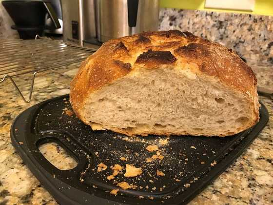
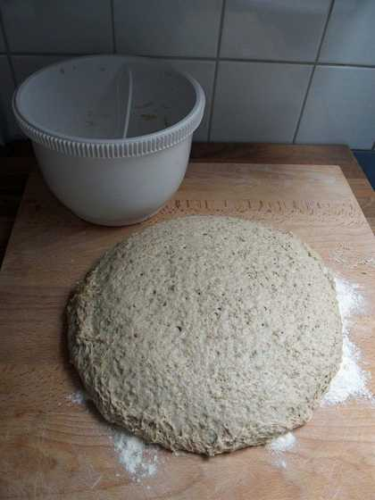

PANS
焼きたてのぬくもりを、そのまま。
Instagramでは「無添加生地、国産小麦を使用した安心あったかパン」と紹介されています。具体的なパンの種類・価格は準備中です。下の写真はフリー素材のイメージで、お店の商品ではありません。




メニュー詳細・価格: 準備中
VOICE
口コミ(イメージ例)
以下は制作側が作成したイメージ例で、実在のお客様の声ではありません。
イメージ例
袋を開けると、ふわっとやさしい小麦の香りがしました。
イメージ例
おなかにやさしい感じがして、毎日食べたくなるパンです。
イメージ例
温泉街の散歩のおともに。あったかい気持ちになれました。
ABOUT
安心、あったか。それが「ぬくぬく」。
瀬波温泉街で、無添加の生地と国産小麦を使ったパンを焼いているお店です(Instagramの紹介文より)。「安心」と「あったか」という言葉が、お店の特徴として掲げられています。
店名の意味については確認できていません。このサイトでは「ぬくぬく」という響きから、焼きたてのあたたかさを制作側のイメージとして表現しました。




| 営業日 | 土・日・月曜(Instagramの紹介文に記載。変更の可能性があるため、最新情報はInstagramをご確認ください) |
|---|---|
| 営業時間 | 10:00〜16:00(完売次第閉店 / Instagram記載) |
| 電話 | 準備中 |
| ご予約・駐車場 | 準備中(Instagramのハイライトに案内あり) |
| @panya_nuku_nuku |

ACCESS
アクセス
〒958-0037 新潟県村上市瀬波温泉２丁目２−１８